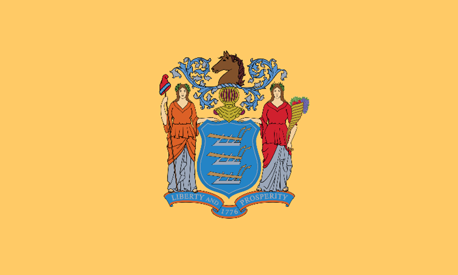

New Jersey
"New Jersey is a state in the northeastern United States, bordered by New York, New Jersey, Delaware, Maryland, West Virginia, Ohio, and Lake Erie. It is known as the “Garden State” for its agricultural production and the “Crossroads of the Revolution” for its strategic role in the American Revolutionary War. It is also famous for its beaches, casinos, and musical legends."
New Jersey is a state in the northeastern United States, bordered by New York, New Jersey, Delaware, Maryland, West Virginia, Ohio, and Lake Erie. It is known as the “Garden State” for its agricultural production and the “Crossroads of the Revolution” for its strategic role in the American Revolutionary War. It is also famous for its beaches, casinos, and musical legends.
Some of the facts and information about New Jersey are:
- It is the 11th state to ratify the U.S. Constitution on December 18, 1787.
- It is the fourth smallest state by area and the most densely populated state.
- It has 21 counties and its capital is Trenton. Its largest city is Newark.
- It has the highest percentage of millionaire households in the nation.
- It is the only state where all of its counties are classified as metropolitan areas.
- It is the birthplace of many famous people, such as Thomas Edison, Albert Einstein, Frank Sinatra, Bruce Springsteen, Jon Bon Jovi, Whitney Houston, and Meryl Streep.
- It is the leading producer of cranberries, blueberries, and tomatoes in the country.
- It has more than 50 resort cities and towns, such as Atlantic City, Cape May, and Asbury Park.
- It has more than 1,800 miles of shoreline, including 130 miles of Atlantic coast.